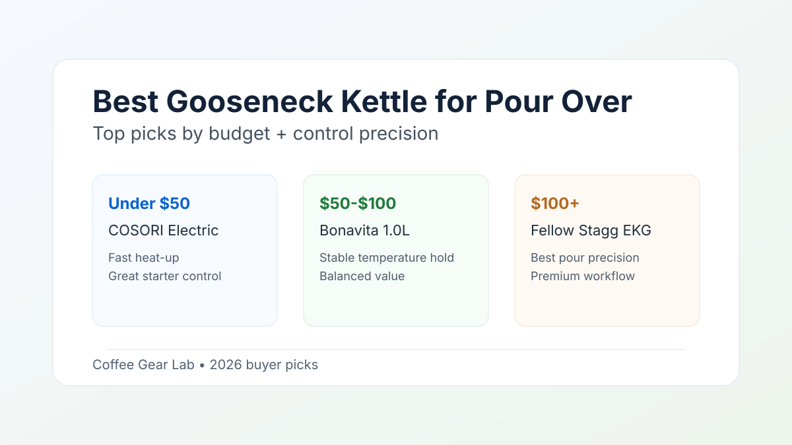

Best Gooseneck Kettle for Pour Over: 3 Picks That Control Your Brew
For pour over, your kettle controls extraction as much as your grinder. The right spout flow and stable temperature make it easier to hit repeatable cups every day.

Quick picks by budget
| Budget | Pick | Why it wins | Best for |
|---|---|---|---|
| Under $50 | COSORI Electric Gooseneck Kettle | Fast boil, accurate-enough presets, easy starter flow control | First pour-over setup |
| $50–$100 | Bonavita 1.0L Variable Temperature Kettle | Steady temp hold and predictable pour speed | Daily V60 and Chemex brewers |
| $100+ | Fellow Stagg EKG | Most precise flow feel, strong ergonomics, stable hold mode | Enthusiasts chasing cup-to-cup consistency |
What actually matters in a pour-over kettle
- Spout geometry: A narrower, smoother spout gives better control for bloom and pulse pours.
- Temperature stability: If water swings while brewing, extraction drifts and flavor gets noisy.
- Handle balance: A comfortable grip reduces wrist fatigue and improves precision over longer pours.
- Heat-up + hold workflow: For weekday brewing, speed and hold mode matter more than extra features.
Pair your kettle with a consistent grinder and a responsive scale for better results. If your grinder is still the weak link, start with our best coffee grinder for pour over guide. If your ratios drift day to day, lock them in with the coffee brewing ratio guide.
Which kettle should you buy?
Choose COSORI if you need the best value to start brewing now. Choose Bonavita if you want better hold stability without jumping to premium price. Choose Stagg EKG if precision and workflow feel are worth paying extra for.
FAQ
Do I need variable temperature for pour over?
Not strictly, but it helps. Being able to repeat 92–96°C water on demand improves consistency across different beans.
Can a cheap gooseneck kettle still make good coffee?
Yes, if flow control is stable. Budget kettles can brew excellent cups when paired with a good grinder and repeatable ratios.
Related guides
- Best Coffee Grinder for Pour Over
- Best Coffee Scale for Espresso & Pour Over
- Coffee Brewing Ratio Guide
- AeroPress vs French Press
- Best Espresso Machine Under $200
- Best Manual Coffee Grinder Under $100